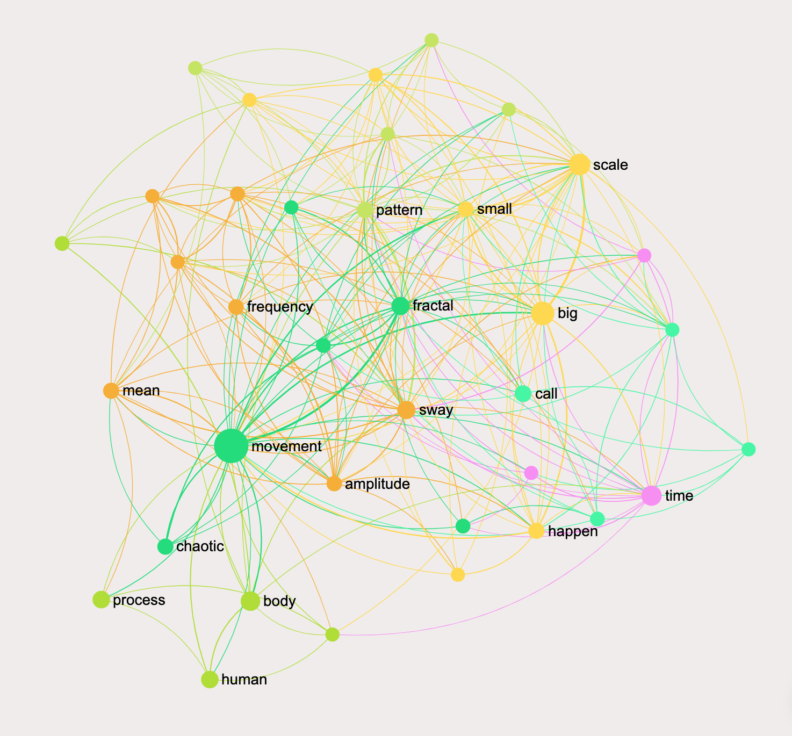
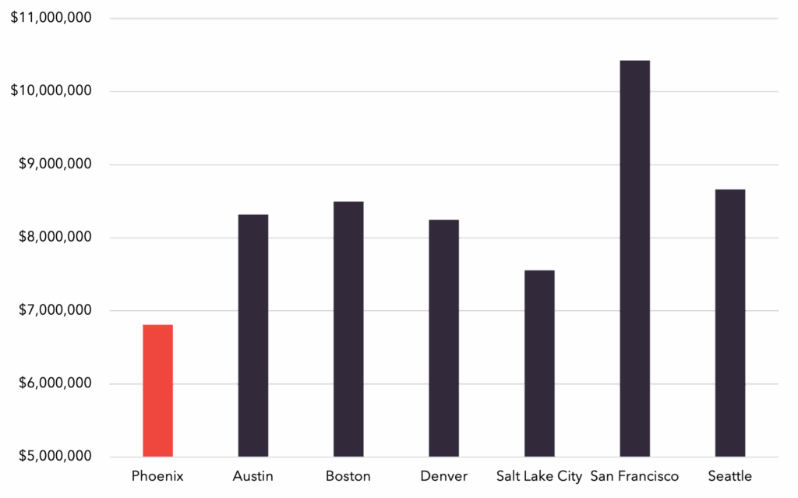

Predictive modeling
Data science · Python
Predicting concrete strength
R² 0.93 Held-out UCI data
A tuned neural network estimates compressive strength from concrete mix proportions.
Read the case study →I bring hands-on operational experience and data engineering together to build practical tools, explain complex patterns, and help teams make better decisions. By bridging complex operational environments with robust technical workflows using SQL, Python, Tableau, and Power BI, I transform intricate data into clear, automated insights and reliable reporting infrastructure. Beyond traditional analytics, I leverage my training in Artificial Intelligence in Business and ongoing leadership coursework in data analytics and visualization from Arizona State University to drive strategic experimentation, optimize operations, and scale high-impact, AI-driven solutions.
Real case studies that show the question, the method, and what the analysis found.
A tuned neural network estimates compressive strength from concrete mix proportions.
Read the case study →
Hierarchical clustering and PCA reveal meaningful groupings across 32 vehicle models.
Read the case study →
A staffing application built to route shift schedules into a centralized database and support day-to-day operations.
Ask about this project →I am a Data Analyst and Applied AI Generalist who bridges the gap between raw operational data and intelligent, automated systems. With a strong foundation in SQL, Python, Tableau, and Power BI—complemented by hands-on experience in complex healthcare environments—I specialize in transforming intricate datasets into clear, actionable business insights and high-impact dashboards.
Beyond traditional analytics, my training in Artificial Intelligence in Business from Arizona State University and workflow orchestration allows me to design modern, tech-forward solutions that automate workflows, streamline data pipelines, and drive smarter decision-making. Whether building interactive visual reports or architecting intelligent systems, I focus on turning complex data challenges into seamless, efficient operations.
Open to conversations about analytics, applied AI, and healthcare operations.